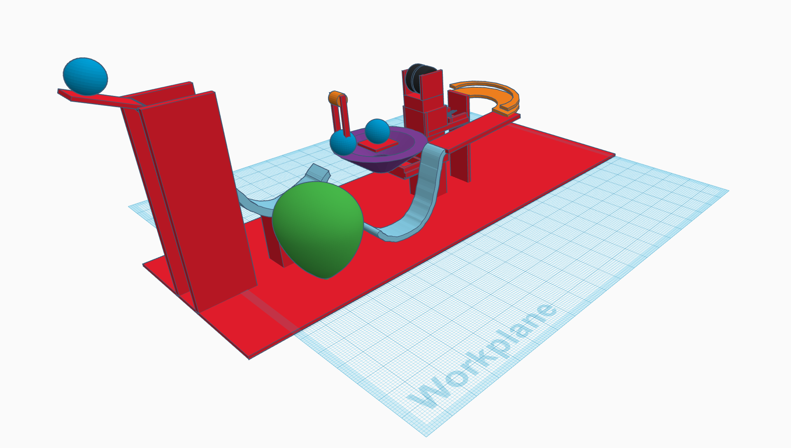
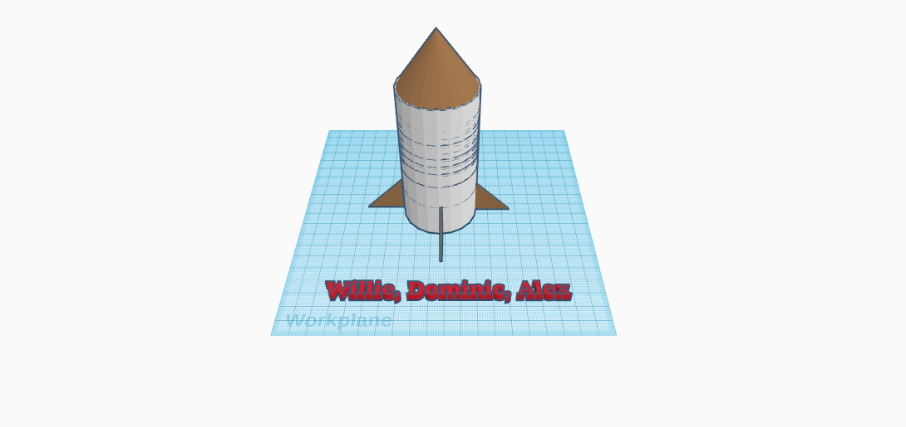
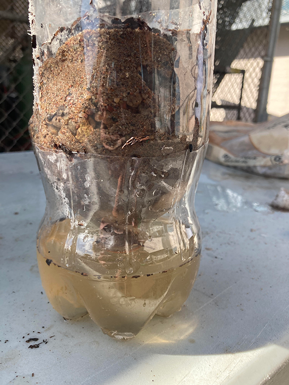
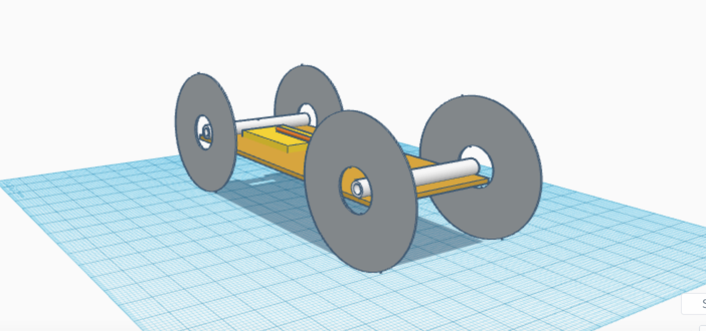
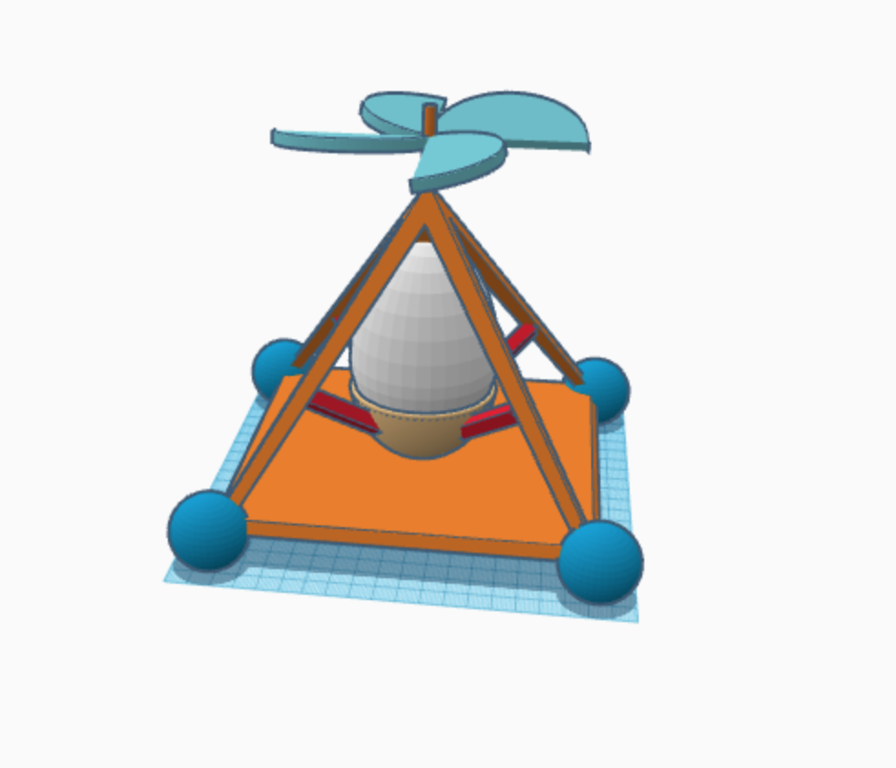

Entry #1: I don't really know how to code in all honesty, and most of these things are really confusing. However, this class is really fun and so far, not too complex. We had a competition to get a marble in a jar by moving it through plastic pipes. We weren't allowed to touch the marble and it had to always be moving.
Entry #2: Today we worked on our Rube Goldburg project and we had to scrap a fair amount of our CAD since we started to fall behind in the physical building process. I think it was better that way because some of the CAD elements didnt actualy work. We originally had a see-saw element and a funnel, but the see-saw was too much to handle. And the funnel was tricky to cut and implement, but even after successfully adding it to our design, we decided not to use it.
Entry #3: We finished our RG project and ours actually worked properly. We ended and did a challenge where we had to design the letter E. I made my dimensions impossible to create, and Dominic had a WONDERFUL time with it.
Entry #4: We started and finished making a robotic hand to pick up a cup. It was made out of cardboard, string, and rubber bands. Our team had a really solid design but the fingers were over-designed and there were easier ways to get the same result.
Entry #5: This week we started our bottle rocket project. Our group's CAD got finished pretty quickly and, like always, it looked pretty good. The actual build got finished quickly too, since we had 5 people in our team.

Entry #6: We finaly launched our bottle rockets today. Our team's rocket was made of a Minute Maid bottle and it actualy went far in comparison to the other rockets. A couple of the rockets turned around and flew backwards toward our class. It was pretty fun.
Entry #7 Today we attempted to filter dirty water. We were only given cotton, bottles, dirt, sand and rocks. We had a couple methods to use and started by layering the cotton, then lots of sand, then small rocks, then finally big rocks.

Entry #8 Today we started our electical engineering unit and we worked with bread boards. The electrical currents and flow were completey new topics for me. I would like to say nothing exploded, but our first LED light sparked violently when we plugged each side into a diffrent current.

Entry #9 Today we finished and pitched our buisness. We learned about how a project is managed and how busnisses are funnded. The idea that we had to pitch to the class was a blue tooth basketball. It wasnt the greatest idea but the pitch went well anyway.

Entry #10 We started our civil enginering lesson today and we are going to be making a spagetie bridge that is 2 feet long. We are given 40 pieces to make the bridge.
Entry #11 Today we finished and tested the bridge to see how much weight it can hold. We used water to aply the weight to the bridge. Our desigen was two thick beams conected by short pices in the middle. On the top of the bridge we had piramed supports.
Entry #12 today we made oobleck from corn starch and water. The problem was we had to figure out the perfect rate and amount to pour the water into the corn starch. if we poured it to fast then it wouldnt mix but if it was to slow then it took a super long time.
Entry #13 Today we started writing and reasurching the mousetrap car project. We also sketched a cad for the car. The orgignal desigen had the string attaced to the back axel and the mouse trap. However, we quickly relized the mouse trap wouldn't generate enough energy on its own swing since the arc of the swing was too small for all the string. To fix this, we attached an arm to the end of the mouse trap. This extended the arc by a lot and alowed for more energy move the car. We were rushed in the begining of the project and didnt comunicate. this lead to some dumb decisons like trying to put tape on each wheel for traction. This didnt work out at all and we had to work with much less time.
Entry #15 Today we finished the mouse trap project and compared our car to other groups. Our car went over 7 feet and was one of the best in the class. This project had a lot of bumps with the early stages. I didnt realize how much anextra arm would come in handy with gaining extra momentum. It helped us gain tons of distance. We also were woried that the wheels wouldnt have any traction and wanted to put tape on them. This was a waste of time as it didnt change anything and took to long. The worst problem by far was that our car generated so much power that it took only 3 launches untill it needed to be repaired. The cardboard base wasnt strong enog=ough to supprot the moustrap arm's movment. In the futtuer, I think spending more time with the design and planing with the rest of your team will lead to the most sucses and can not be rushed.
Entry #16 Today we started the desigen for the egg drop chalenge. Our design is heavely inspired from Mark Robers original desing of his piramed-shaped idea. We could only use a small amoujnt of each material. We used straws, popsical sticks, and a plastic bag for most of the build. We luckily spent more time planing as I learnd from the last prject and everything went okay.
Entry #17 Today we finsihed and tested our egg drop designs. Each group of two had one person at the bottom of the stairs filming and one person at the top of the stair droping the machine. We thought that the propeler would play a big role in the build but it was to scetchy and got replaced by a simpll plastic bag as a parachute. This was a good decion and lead to a easy succsess on our part.
Entry #18 Today we started and finished our river boat project. We made a CAD for this for this desighn but we used very diffrent design the for the actual boat. We relied on the cup to catch the breath of both me and my partner. We used a paper boat base for the bottom of the boat. this ultimatly held the cup in place and with some added tape, we made sure it didnt fall over or relses the cup. Our boat traveled 80 cm or so.